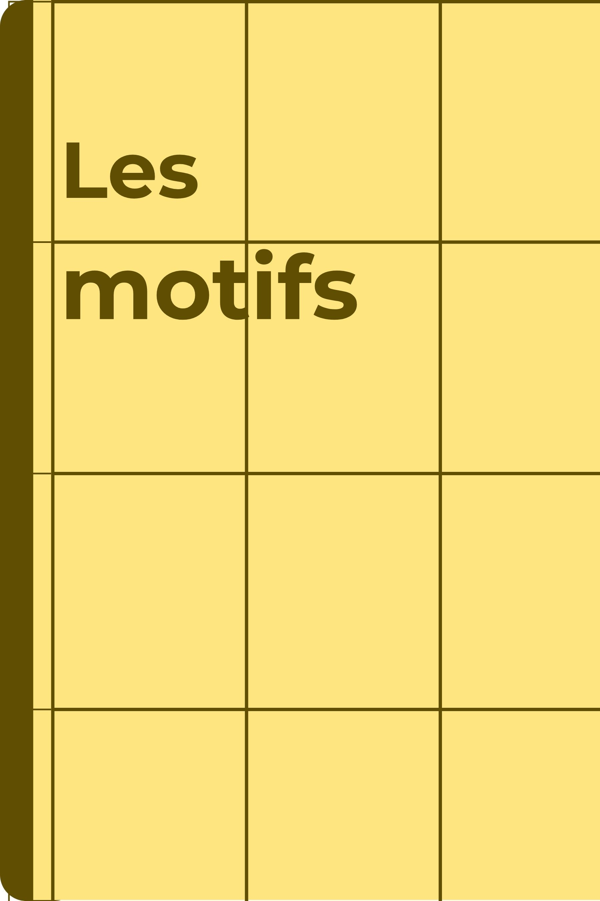

Les activités de reproduction de motifs développent le repérage dans l'espace, l'observation et la précision. Elles offrent également un temps de travail calme, propice à la concentration et à l'application. Faciles à mettre en place, elles permettent à chaque élève de progresser à son rythme tout en découvrant des motifs traditionnels issus de différentes cultures.